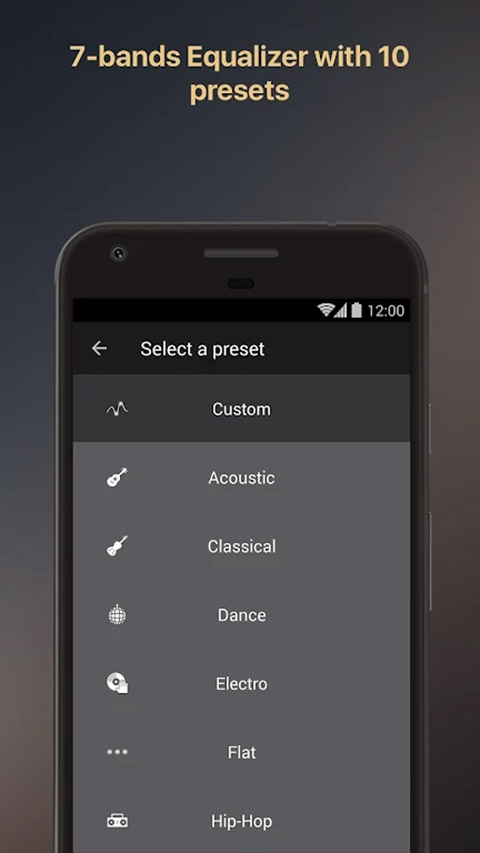
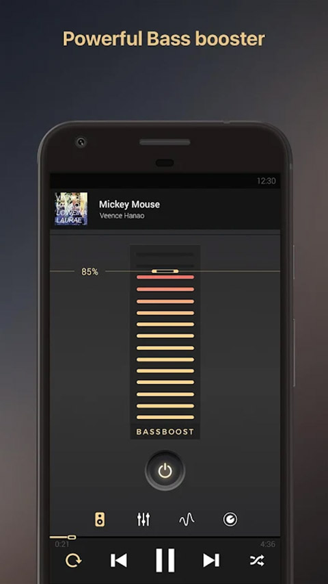

用了半年 equalizer：从"换个播放器"到"离不开它"的真实感受
装它本来是为了换个播放器听个响，半年下来预设存了一屏、界面词全认熟了，有些当初以为好用的功能后来一次没碰，有些没当回事的倒成了每天必开。
装 equalizer 到现在差不多半年了，从 2024 年中那个版本一路用到现在。当初为什么装？说出来有点俗——原来的播放器自带的音效调不出我想要的低音质感，朋友随口提了一句「去 equalizer官网 看一眼，equalizer 的低音增强做得比别家都稳」，从 下载 拿了安装包就装了。没做什么调研，没看评测。
越用越顺手的，是那些"不起眼"的小设计
刚上手时觉得界面没中文是个坎——英法双语，日常操作那十几个词虽然对照一遍就认熟了，但头几天切个预设还要犹豫一下是不是点错了。现在呢？波形图标一眼认出是可视化、喇叭图标就是低音增强、竖排滑块不用看字也知道是均衡器。肌肉记忆这东西，一周下来就成形了。
真正让我觉得"这应用有点东西"的，是预设和自定义方案那一套。官方给了十个流派预设，刚装时我挨个切着听，留下两三个一听就对的——摇滚预设的中频抬升刚好把人声从吉他里捞出来，电子预设的低频轰头但不闷。但预设终究是模板，第四五天我开始在常用预设基础上动滑块，调满意了存成自定义方案，按"设备-场景"命名——比如「漫步者-通勤」「AirPods-睡前」。现在我存了快十个自定义预设，几乎不碰官方默认的了。这个命名习惯是当初翻 equalizer文档 看第一周上手路线时学到的，当时觉得多此一举，现在发现不命名的话一周后自己都分不清哪个方案配哪个耳机。

低音增强这个功能值得单独说。它和均衡器最左段的低音调节不是一回事——均衡器是精细切削某一频点，低音增强是整体加力，两者叠加生效。头几天我不懂区别，直接把低音增强拉到 85%，结果入耳式耳机里全是破音，还以为是耳机坏了。后来才明白一个纪律：从小档往上试，每档听十几秒，出现破声就往回退一档。现在我的入耳式耳机低音增强只开 20%，头戴式开到 40%，蓝牙音箱 60%——不同设备档位差这么多，是当初没想到的。

越用越烦的，是那些"以为会用"的功能
可视化效果是典型。刚装时觉得五种波形特效跟着节拍动太酷了，接电视当第二屏投了两天，后来就再也没开过。原因很简单——我听音乐时要么在做事（通勤、写代码），要么闭着眼躺床上，没哪个场景需要盯着屏幕看波形。可视化不改声音，纯给眼睛，而我大部分听歌场景是"只用耳朵"的。还有 DJ 模式，当初看介绍说派对时淡入淡出歌单，实际上我一年到头也没开过几次派对，这个功能到现在碰过不超过五回。
桌面小部件也是。头两天加了两个到桌面，觉得挺方便——可以直接切预设、看播放进度。一周后嫌占地方撤了，下拉通知栏也能控播放，何必让桌面变乱。
还有那个同 WiFi 串流，说是能在同一 WiFi 下让多设备共享曲库，我试了一次，发现手机和平板各装一份 equalizer 直接用就挺好，串流还要折腾设置，算了。
每天离不开的，和再也没碰过的
说个反直觉的：每天必开的功能，是睡眠定时器。
我睡前必听歌，而且听着听着就睡着。之前用别的播放器，要么忘记停一整夜耗电，要么定了 30 分钟但当天特别累 20 分钟就睡着了，定时器还在那数。equalizer 的睡眠定时器可以设成"当前队列播完"或者"X 分钟后"，我一般定 15 分钟——反正歌单循环的话，15 分钟足够进入浅眠了。这个功能是第六七天全功能扫一遍时发现的，当时觉得"哦有这么个东西"，没想到后来成了每天必用。
再也没碰过的：队列管理。我习惯直接点一首歌随机播，或者用系统的"最近播放"，特意排队列的场景几乎没有。还有电视和车机的适配——我没有车载娱乐系统，电视也很少连手机放歌，这块对我来说等于不存在。
半年下来，当初的判断修正了什么
头几天我以为 equalizer 就是个"音效增强器"，播放器本身是次要的。半年下来发现不对——它首先是个合格的本地播放器，音效只是加分项。曲库自动同步、后台播放稳定、锁屏界面能控、随机和循环逻辑正常，这些基础功做扎实了，音效才有意义。如果播放器本身卡得要死，再好听的低音也白搭。
另一个修正：当初觉得"没中文是个缺点"，现在觉得"高频词就十来个"其实不算事。图标设计得够直观，波形、喇叭、竖排滑块——不用看字也能认。真正需要查的设置项，对照一遍词表就够了。而且英文界面的好处是，有些功能名在中文里会被翻译得不知所云（比如 "DJ fade mode" 翻成 "DJ 淡入淡出模式"反而更绕），原文反而一眼明白。
去留结论：不会卸载，什么时候会换？
短期内不会卸载。十个自定义预设、睡眠定时器每天用、头戴式耳机那个"低频 40% + 均衡器中频 +3dB"的方案已经是我的舒适区——换一个播放器，这些配置全部要重调，成本太高了。
但如果出现下面两个信号，我会认真考虑换：第一，官方半年以上没更新，已知 bug 不修；第二，有另一个播放器能做到 equalizer 的核心体验（预设管理 + 独立低音增强），同时界面有原生中文且曲库管理更灵活。目前没看到这样的替代品。
说白了，equalizer 不是那种"惊艳到我逢人就安利"的应用，它是"过日子"的工具——每天打开、选预设、放歌、设定时，几个动作形成肌肉记忆之后，你甚至不会意识到自己在用它。关于它的功能细节和版本迭代记录，维护者同步更新在了 GitHub 主仓，国内访问不畅的话可以去 Gitee 或 GitCode 拿同样的内容。好工具就应该是这样的。